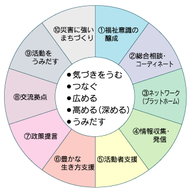
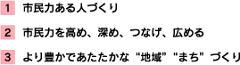
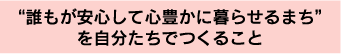
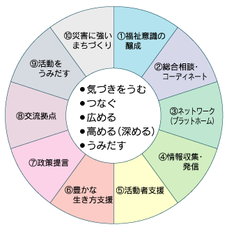
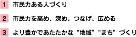
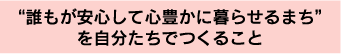

みなさん、「これからボランティア活動をしてみようかな」とか｢ちょっと手助けほしいな｣と思ったときや、活動をしていて｢ちょっとサポートがほしいな、相談したいな｣と思うことなどありませんか？
センターは、そのような声にお答えします。
いつでも、お気軽にご相談ください。
お電話でも大丈夫ですが、ぜひ茅野市ボランティア市民活動センターへお越しください。



開館日時 |
月曜〜金曜 8:30〜17:30 |
| 会議室・印刷機等の利用は 月曜〜金曜 8:30〜21:00 |
| 対 象 | 主に茅野市内でボランティア・市民活動を行っている個人や団体，又はこれから行おうとする方 |
| 登録の仕方 | センターで用意しています｢登録用紙｣にご記入の上提出していただきます。 （活動内容・方法、連絡先等をセンターで把握させていただきます） |
| 登録すると | 茅野市ボランティア・市民活動センターの仲間として様々な呼びかけなどをさせていただくことがあります。 会議室や印刷機等をご利用いただくことや、ボランティア保険への加入・ボランティアグループ活動助成金申請等をしていただくことができます。 |
1 |
第1会議室（20名位で会議などができます・イス、テーブルあり） |
2 |
第3会議室（12名位で会議ができます・イス、テーブルあり） |
3 |
12名位で会議ができます・イス、テーブルあり |
4 |
ボランティアルーム（30名位で使用可・絨毯・低いテーブル、座布団あり） |
5 |
調理室（12名位で使用できます・調理台2台） |
6 |
和室（10名位で使用できます・畳・炬燵あり） |
準備中KB |
茅野市ボランティア・市民活動センター登録グループ一覧 |
準備中KB |
いきいきサロンメニュー集 |
 茅野市社会福祉協議会
茅野市社会福祉協議会